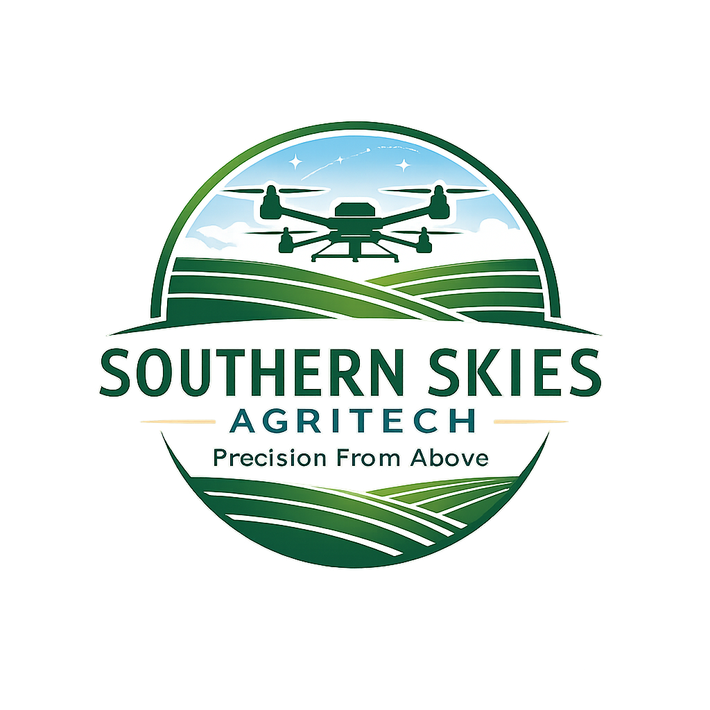

Precision
Targeted application to help reduce waste and improve results.

Southern Skies AgritechVeteran-owned agricultural drone services
Fast, reliable and practical aerial application for when timing, terrain and access matter.
Targeted application to help reduce waste and improve results.
Reach wet, steep or awkward areas where ground equipment struggles.
Responsive aerial support when the spray window opens.
Less soil compaction and reduced disruption to paddocks.
Our services
Broadacre and paddock spraying with accurate aerial application.
Learn more →Target weeds without treating the whole paddock.
Learn more →Safely treat fence lines, wet areas and difficult terrain.
Learn more →Identify issues early with high-resolution imagery and mapping.
Learn more →Veteran owned. Farmer focused.
Southern Skies Agritech supports farmers, landholders and rural contractors with practical, compliance-first drone services across NSW.
Talk to usGet in touch
Send through your location, approximate hectares, target crop or weeds, and preferred timing.
Phone: 0405 524 710
Email: info@southernskiesagritech.com.au